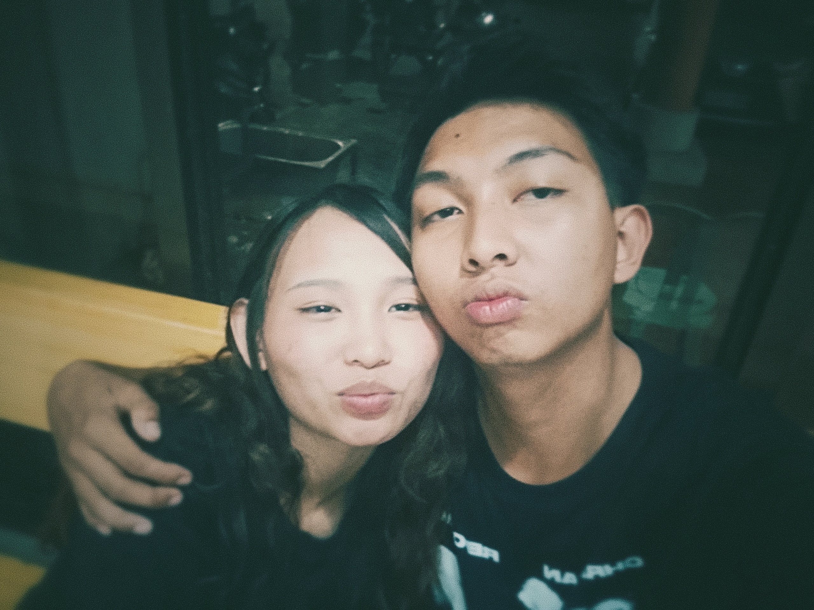
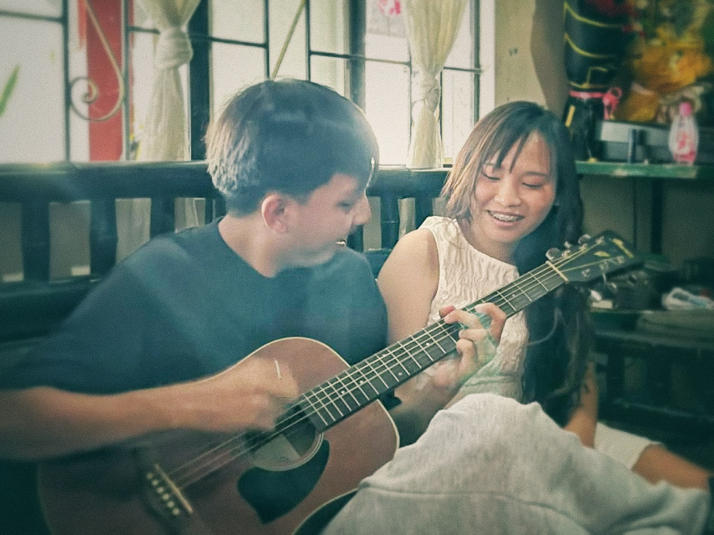
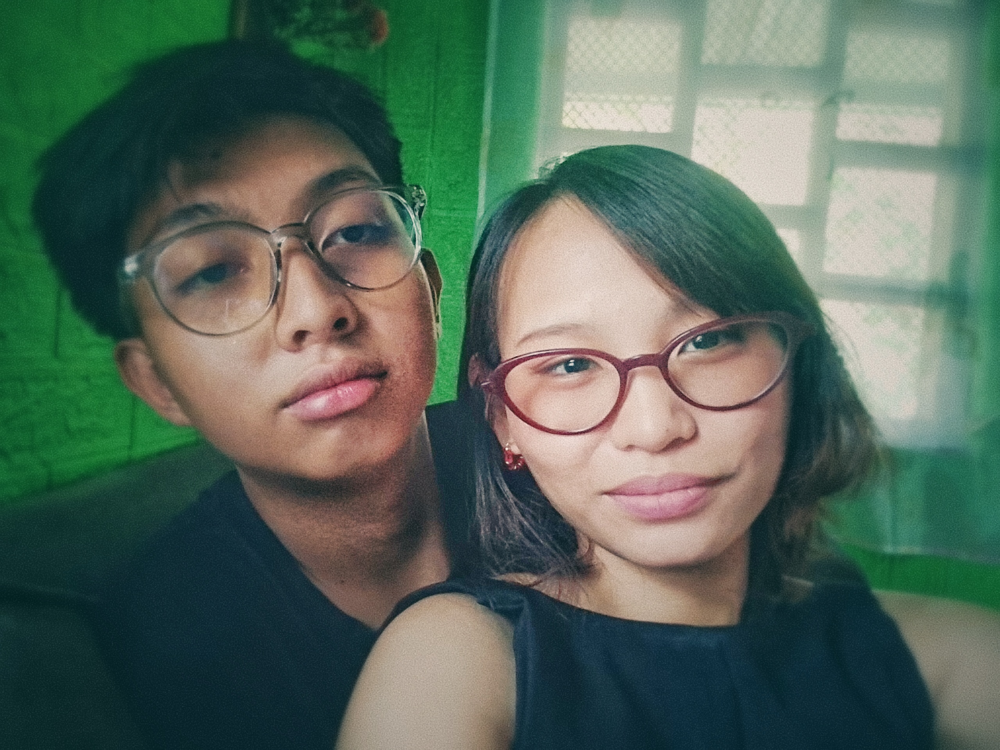
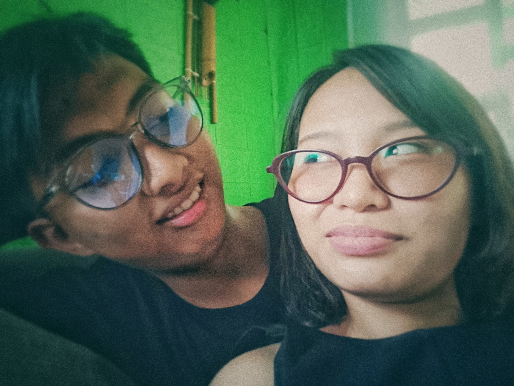

Hint: It’s what I call you when everything feels soft and unspoken.
A Formal Invitation for Akira Rhien Karunungan Llave
July 12, 2026
This isn’t just an invitation. It’s a promise wrapped in intention. You already said yes, but I still wanted this moment to feel official— like something worth remembering even before it begins.
On July 12, we don’t just go somewhere. We step into Grace, into Grounds, into Glimpses— three quiet chapters of a day I hope becomes one of our softest memories. Each moment is carefully thought through, not because I'm trying to impress you, but because you deserve to feel how deeply I want to know you.
And if I'm being honest… I just like making space for you in things I build. Every detail here is a reflection of the small ways I've learned what makes you feel safe, seen, and cherished. From the simplest conversation to the quietest glances, I want to create something that feels as genuine as what we're building together.
This day will be ours—no rush, no pressure, just presence. I hope the spaces we share together feel like home, like breathing easier, like exactly where we're meant to be. Whatever unfolds, I'm grateful for the chance to build more memories with you.
Always learning you,
— Keziah
Where everything begins with grounding, not rushing.
Coffee, laughter, and conversations that stretch time a little.
Photos we don’t plan too much—just moments we let happen.



